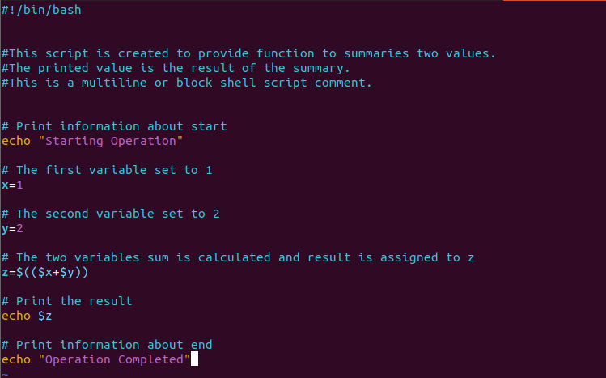

Linux Shell Scripting Toolkit
Bash-based toolkit for Linux administration and troubleshooting, featuring interactive scripts for user management, system info, file operations, backups, permissions, and process control.
LinuxBashCLI
View on GitHub